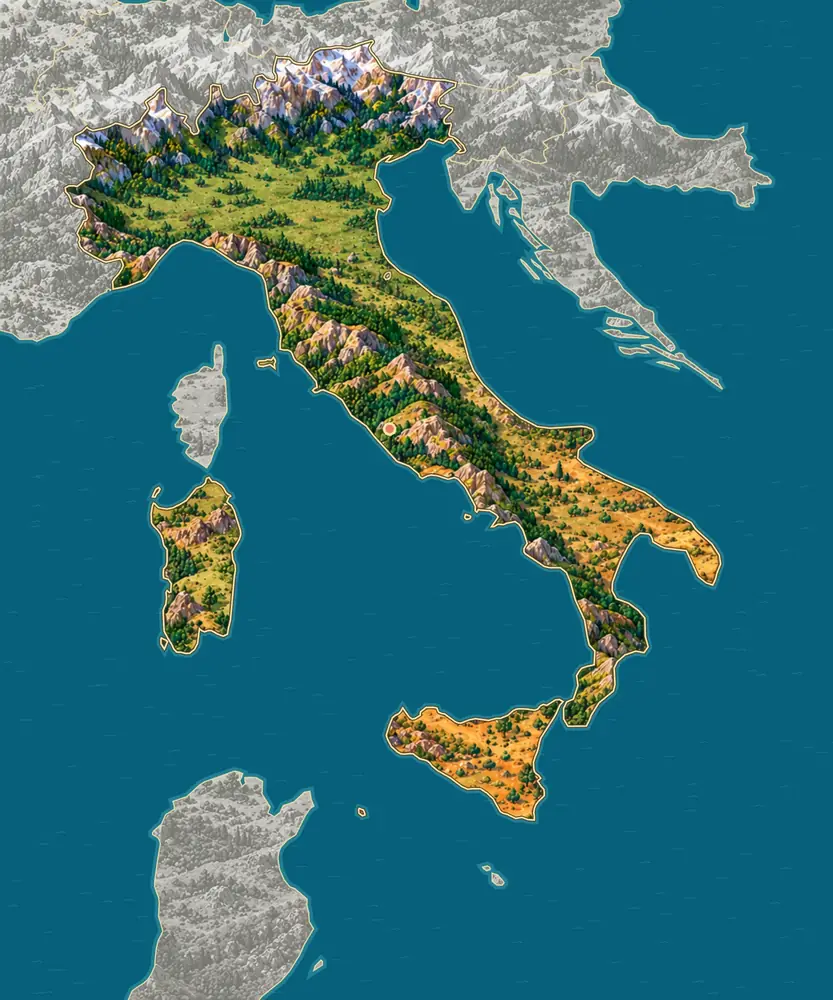
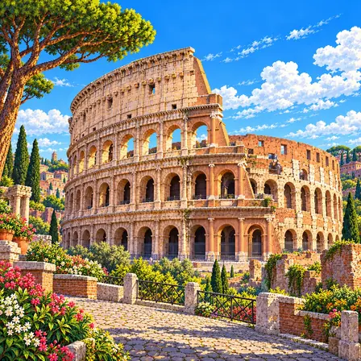
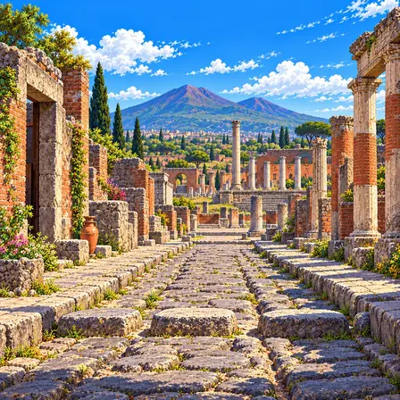
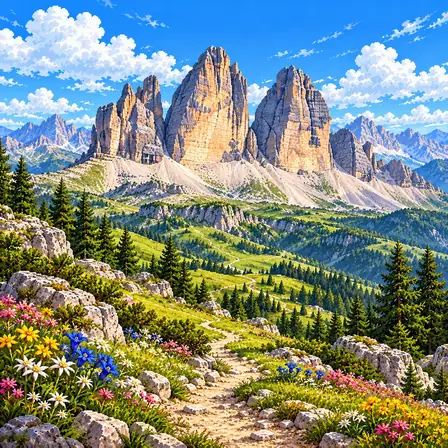
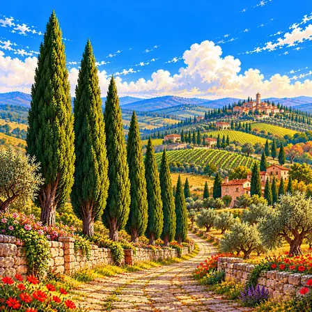
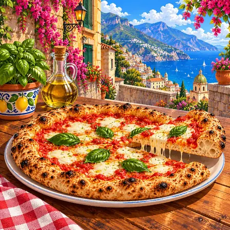
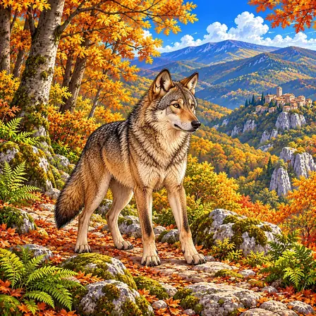
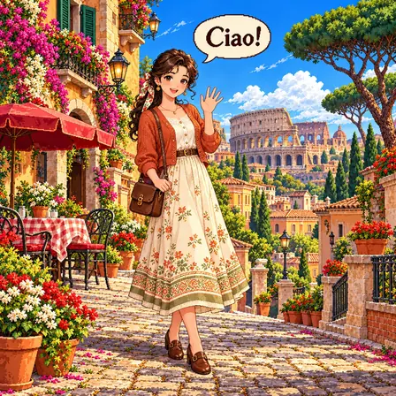

알프스와 포강 평야
북쪽 국경을 따라 알프스가 둘러 있고, 그 아래에는 포강이 흐르는 넓고 평평한 포강 평야가 있어요. 이 평야는 알프스와 아펜니노산맥 사이에 넓게 펼쳐져 있어요.
출처: ESA, Earth from Space: Mountains of snow · NASA Earth Observatory, Spring Snow Cover in the Alps

이탈리아는 바다로 길게 뻗은 장화 모양 나라예요. 북쪽에는 눈 덮인 알프스, 가운데에는 긴 산줄기가 있어요. 남쪽 섬 시칠리아에는 지금도 불을 뿜는 화산 에트나가 있어요.
이탈리아는 북쪽의 알프스와 포강 평야, 반도 가운데를 지나는 아펜니노산맥, 그리고 시칠리아와 사르데냐 같은 섬으로 이루어져 있어요. 땅이 아직도 움직여 화산이 많아요.
북쪽 국경을 따라 알프스가 둘러 있고, 그 아래에는 포강이 흐르는 넓고 평평한 포강 평야가 있어요. 이 평야는 알프스와 아펜니노산맥 사이에 넓게 펼쳐져 있어요.
출처: ESA, Earth from Space: Mountains of snow · NASA Earth Observatory, Spring Snow Cover in the Alps
아펜니노산맥은 반도 북쪽에서 남쪽 끝까지 등뼈처럼 이어져요. 산맥 양쪽으로 좁은 해안 평야가 있고, 남쪽으로 갈수록 여름이 덥고 메마른 땅이 많아요.
출처: ESA, Earth from Space: Mountains of snow · Natural Earth, Land, 1:50m
반도는 서쪽의 티레니아해, 동쪽의 아드리아해, 남쪽의 이오니아해에 둘러싸여 있어요. 남서쪽 바다에는 시칠리아와 사르데냐라는 큰 섬 두 개가 있어요.
시칠리아 북쪽의 에올리에 제도는 화산이 만들고 또 무너뜨린 섬들이에요. 스트롬볼리섬과 불카노섬에서 본 분화 모습이 두 가지 화산 분화의 이름(스트롬볼리식, 불카노식)이 되었어요.
시칠리아 동쪽의 에트나산은 높이가 약 3,300m로, 지중해의 섬에 있는 산 가운데 가장 높아요. 세계에서 가장 활발한 성층 화산(용암과 화산재가 번갈아 쌓인 원뿔 모양 화산)으로 손꼽혀요.
알프스 동쪽의 돌로미티에는 3,000m가 넘는 봉우리가 18개 있어요. 아주 오래전 바닷속에 쌓인 석회질 바위가 솟아오른 뒤 깎여, 탑과 기둥 같은 봉우리와 깎아지른 바위벽이 생겼어요.
이탈리아에서 잘 알려진 도시, 역사유산, 자연, 식물, 문화, 음식, 동물, 인사말, 국기를 한 장씩 그렸어요.

로마는 이탈리아의 수도예요. 2,700년도 더 된 아주 오래된 도시예요. 옛날 경기장인 콜로세움이 지금도 서 있어요.
로마는 이탈리아의 수도로 약 275만 명이 살아요. 기원전 753년 건국된 것으로 전해지며, 제정 로마 시절에는 100만 명 가까이 살았을 것으로 짐작되는 고대 최대의 도시였어요. 지금 도시의 땅속 곳곳에 공화정·제국 시대 유적이 층층이 남아 있어요. 콜로세움·포로 로마노·판테온 등 고대 유적이 현대 생활 공간과 공존하며, 도시 안에 독립 국가 바티칸 시국이 있어요.

폼페이는 화산재에 묻혔던 옛 로마 도시예요. 2,000년쯤 전에 화산이 터져 도시가 통째로 덮였어요. 빵집과 목욕탕, 벽 낙서까지 남아 옛사람들의 생활을 알려 줘요.
폼페이는 79년 베수비오 화산 폭발로 약 4~6m 두께의 화산재 아래 묻힌 고대 로마 도시예요. 화산재가 산소를 차단해 2,000년간 거의 완벽히 보존됐어요. 빵집·목욕탕·선거 공약 낙서까지 남아 유네스코 세계문화유산이에요.

돌로미티는 뾰족한 바위산이 줄지어 선 산맥이에요. 아주 오래전 바닷속 산호가 쌓여 생긴 돌로 되어 있어요. 해가 질 때 바위가 분홍빛으로 물들어요.
돌로미티는 이탈리아 북부 알프스의 웅장한 암석 산맥이에요. 약 2억 5,000만 년 전 얕은 열대 바다에 쌓인 산호초와 생물 잔해가 굳어 돌로마이트(탄산칼슘마그네슘) 암석이 됐어요. 지각 충돌로 솟아오른 후 빙하 침식으로 현재의 뾰족한 암봉이 형성됐어요. 유네스코 세계자연유산이에요.

사이프러스는 위로 쭉 뻗은 날씬한 나무예요. 이탈리아 시골 언덕길을 따라 줄지어 서 있어요. 옛 그림 속 풍경에도 자주 나와요.
사이프러스는 이탈리아 토스카나 구릉 풍경의 상징 같은 나무예요. 위로 쭉 뻗은 날씬한 원뿔 형태가 독특하며, 수백 년 된 사이프러스 가로수 길이 시에나와 산퀴리코 주변에 펼쳐져요. 레오나르도 다빈치의 그림 배경에도 등장하며, 이탈리아 농촌의 서정적인 풍경을 완성하는 나무예요.
곤돌라는 베네치아의 좁은 물길을 다니는 길쭉한 배예요. 사공이 노 하나로 배를 저어요. 배가 한쪽으로 살짝 휘어 있어 똑바로 나아갈 수 있어요.
베네치아 곤돌라는 좁은 운하를 오가는 길고 날렵한 전통 나무 배예요. 길이가 약 11m나 되지만, 곤돌리에레라 불리는 뱃사공이 노 하나만으로 능숙하게 몰아요. 배가 한쪽으로 살짝 휜 비대칭 모양이라 노를 한쪽에서만 저어도 똑바로 나아가요. 전통에 따라 선체는 검은색으로 칠하고, 8가지 종류의 나무로 정성껏 만들어요. 수백 년 전에는 주요 교통수단이었고, 오늘날에는 베네치아를 대표하는 관광 체험이 됐어요.

피자는 둥근 빵 위에 토마토소스와 치즈를 얹어 구운 음식이에요. 이탈리아 나폴리에서 시작되었어요. 아주 뜨거운 화덕에서 90초 만에 구워요.
피자는 밀가루 반죽을 둥글게 펴고 토마토소스와 모차렐라 치즈를 올려 화덕에 구운 이탈리아 나폴리의 음식이에요. 토마토의 빨강, 치즈의 하양, 바질의 초록이 어우러진 마르게리타가 가장 유명해요. 정통 나폴리 피자는 450도가 넘는 장작 화덕에서 약 90초 만에 구워내요. 가장자리는 부풀어 폭신하고 가운데는 얇고 촉촉한 것이 특징이에요. 나폴리 피자 장인의 기술은 2017년 유네스코 인류무형문화유산에 등재됐어요.

이탈리아 늑대는 산속 숲에 가족끼리 무리 지어 사는 늑대예요. 한때 100마리쯤으로 줄었지만, 보호 덕분에 3,000마리가 넘게 늘었어요. 로마를 세운 쌍둥이를 늑대가 길렀다는 옛이야기가 있어요.
이탈리아 늑대는 이탈리아 아펜니노산맥의 숲에 사는 회갈색 늑대예요. 가족 단위로 무리를 이루어 살며, 사슴과 멧돼지를 함께 사냥해요. 1970년대에 약 100마리까지 줄었지만, 1971년부터 법으로 보호한 덕분에 지금은 3,000마리가 넘게 회복됐어요. 먹이를 찾아 하룻밤에 수십 km를 이동할 만큼 지구력이 좋아요. 로마를 세운 쌍둥이 형제를 늑대가 길렀다는 건국 이야기 덕분에 이탈리아의 상징 동물이 됐어요.

차오(Ciao)는 이탈리아어로 '안녕'이에요. 만날 때도 헤어질 때도 쓸 수 있어요. 지금은 세계 여러 나라 사람들도 써요.
Ciao는 '차오'라고 읽는 이탈리아어 인사말이에요. 베네치아 사투리의 정중한 인사가 변해서 지금의 친근한 인사가 됐다고 전해져요. 만날 때와 헤어질 때 모두 쓸 수 있는 편리한 말이라 전 세계로 퍼졌어요. 이탈리아어는 고대 로마의 라틴어에서 발전한 로망스어로, 약 6,500만 명이 써요. 음악 용어 '포르테', '피아노'처럼 음악과 요리 분야의 세계 공통어를 많이 남긴 언어예요.

이탈리아 국기는 초록, 하양, 빨강 세 줄로 되어 있어요. 줄이 세로로 나란히 서 있어요. '삼색기'라는 별명으로 불려요.
이탈리아 국기는 초록·하양·빨강 세 개의 세로줄로 이루어진 삼색기예요. '일 트리콜로레(삼색기)'라는 애칭으로 불러요. 프랑스 삼색기의 디자인에서 영향을 받아 1797년경부터 이탈리아 지역에서 쓰이기 시작했어요. 초록은 국토의 들판, 하양은 알프스의 눈, 빨강은 따뜻한 마음을 나타낸다는 이야기가 전해져요. 1946년 공화국이 되면서 지금의 국기로 확정됐어요.